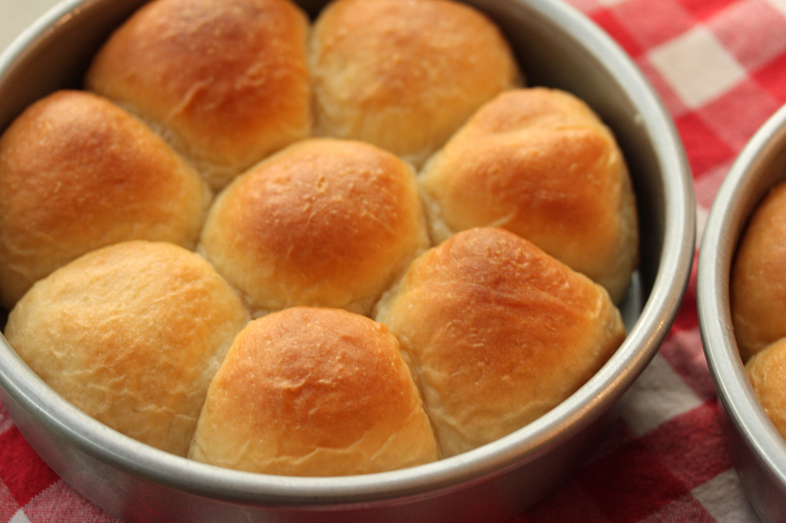

Dinner Rolls

Description
This Easy Dinner Rolls recipe come together so quickly, with no kneading required and no electric mixer required!
Using instant yeast and letting the rolls rise in a warm place cuts the time needed way down,
so you can have these fluffy, soft pull-apart dinner rolls on your table in under an hour.
Ingredients
- 1 packet instant dry yeast or 2 1/4 teaspoons
- 1 cup oat milk warmed to about 110 degrees F
- 1/4 cup honey
- 6 tablespoons melted salted butter divided
- 1 teaspoon kosher salt
- 1 large egg
- 2.5-3 cups all-purpose flour more if needed
Steps
- In a large mixing bowl, whisk together the warm milk (1 cup), honey (1/4 cup), and instant dry yeast (1 packet)
until yeast and honey are fully dissolved. Whisk in the kosher salt (1 teaspoon), egg, and 1/4 cup (4 tablespoons) of the melted butter,
until everything is well-combined.
- Add the flour to the bowl 1/2 cup at a time, until dough easily comes off the sides of the bowl and forms a sticky ball in the center.
Use a wooden spoon to stir. I had to use all three cups of flour, but you may need less or even a bit more.
- Grease the bottom of a 9" round pan (see notes for alternatives) with 1 tablespoon of the butter, generously coating the bottom and sides.
- Form 12 equal-ish balls with the dough and place them in the prepared pan. The dough is quite sticky, so this may be a little frustrating, but I found it helpful to coat my hands in a little melted butter as I worked (or, use olive oil or flour to coat your hands).
You can also use a large disher scoop to help get the dough out of the bowl.
- Preheat your oven to 400 degrees F. While the oven is preheating, set the prepared rolls on the stovetop toward the back, covered with a towel.
The heat of the oven as it preheats will help the rolls to rise quickly. Let them rise for 20-30 minutes.
- Bake for 25 minutes, or until tops are golden brown on top and rolls are cooked through completely
(if you tap on one in the center, it should sound hollow).
- When they're done, brush with remaining tablespoon of melted butter. Wait for them to cool for 10 minutes so you can handle them, pull apart, and serve.